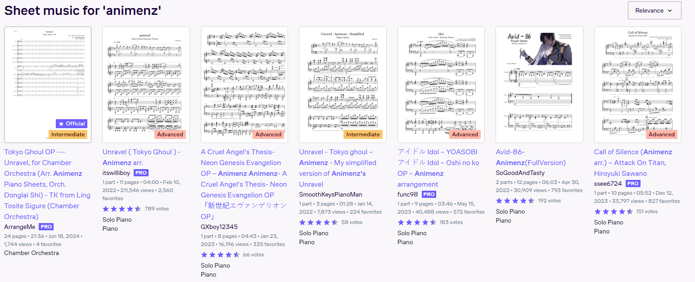
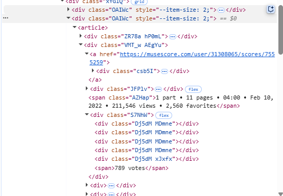
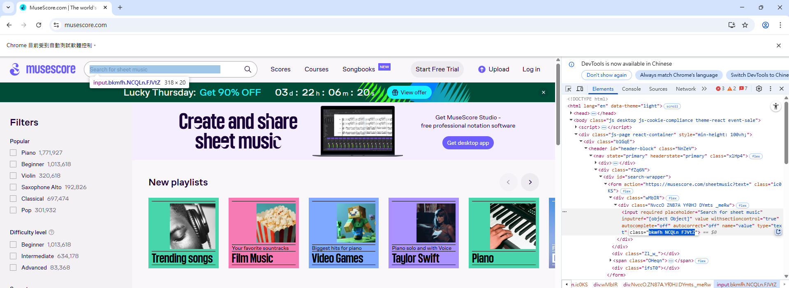
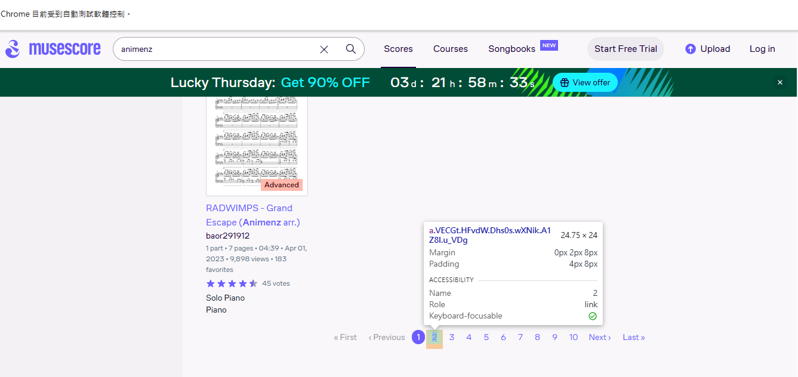
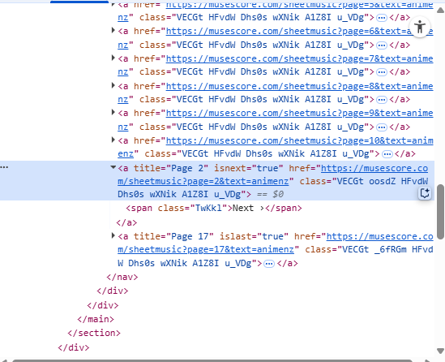
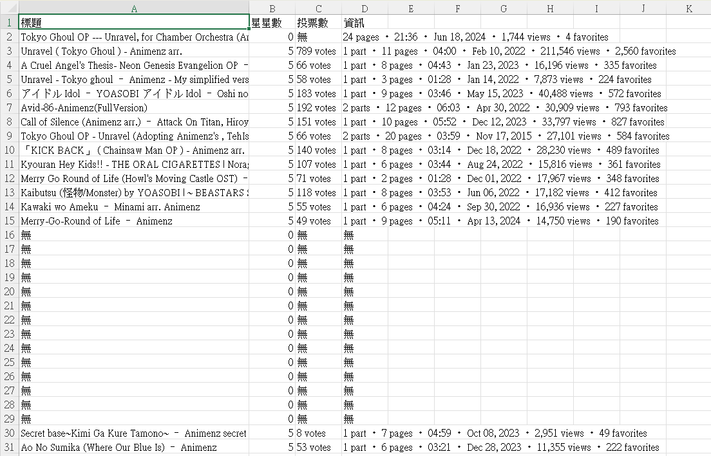

Animenz 樂譜爬蟲流程展示
Step 1：載入套件
from selenium import webdriver
from selenium.webdriver.chrome.service import Service
from selenium.webdriver.common.by import By
from selenium.webdriver.common.keys import Keys
import time
from webdriver_manager.chrome import ChromeDriverManager
from selenium.common.exceptions import NoSuchElementException, ElementNotInteractableException
import pandas as pd
Step 2：定義資料擷取函數
def scrape_sheet_data():
time.sleep(1)
items = driver.find_elements(By.CLASS_NAME, "OAIWc")
for item in items:
try:
title = item.find_element(By.CLASS_NAME, "csb5I").text.strip()
except:
title = "無"
stars = len(item.find_elements(By.CLASS_NAME, "Dj5dM"))
try:
votes = item.find_element(By.CSS_SELECTOR, "div.S7NhW > span").text.strip()
except:
votes = "無"
try:
info = item.find_element(By.CSS_SELECTOR, "span.AZHap").text.strip()
except:
info = "無"
data_list.append({
"標題": title,
"星星數": stars,
"投票數": votes,
"資訊": info,
})


Step 3：啟動瀏覽器並搜尋 animenz 樂譜
options = webdriver.ChromeOptions()
options.add_argument("--disable-blink-features=AutomationControlled")
driver = webdriver.Chrome(
service=Service(ChromeDriverManager().install()),
options=options
)
driver.get("https://musescore.com/")
driver.maximize_window()
time.sleep(2)
search_box = driver.find_element(By.CSS_SELECTOR, 'input.bkmfh.NCQLn.FJVtZ')
search_box.send_keys("animenz")
search_box.send_keys(Keys.ENTER)

Step 4：翻頁並擷取資料
data_list = []
count = 0
while count < 10:
time.sleep(2)
scrape_sheet_data()
try:
next_button = driver.find_element(By.CSS_SELECTOR, 'a[isnext="true"]')
if next_button.is_enabled():
next_button.click()
count += 1
time.sleep(3)
else:
break
except (NoSuchElementException, ElementNotInteractableException):
print("沒有下一頁了或按鈕無法點擊")
break


Step 5：印出前幾筆結果
for i in range(min(20, len(data_list))):
name = data_list[i]["標題"]
stars = data_list[i]["星星數"]
votes = data_list[i]["投票數"]
print(f"[標題 : {name} -> {stars} | {votes}]")
Step 6：關閉瀏覽器
driver.quit()
Step 7：輸出 CSV
df = pd.DataFrame(data_list)
df.to_csv("animenz_樂譜搜尋結果.csv", index=False, encoding="utf-8-sig")
